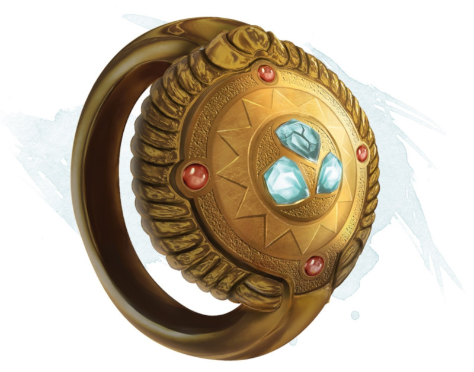

Anneau de triple souhait
Anneau, légendaire
Lorsque vous portez cet anneau, vous pouvez utiliser une action pour dépenser une de ses 3 charges pour lancer le sort souhait depuis l'anneau. L'anneau devient non magique lorsque vous utilisez la dernière charge.
Dungeon Master´s Guide (SRD)
